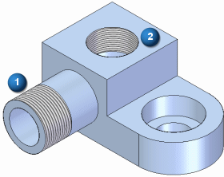
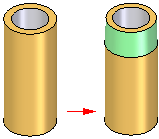
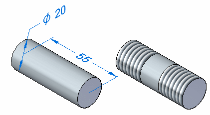

Thread command
Use the Thread command to add a straight or a tapered thread reference to an existing cylindrical face. The cylindrical face can be a partial or complete cylinder, and can be an external (1) or internal (2) face. A planar, circular edge is required to define the start end for the threads.

Threads can be added either internally or externally. When constructing tapered threads, you do not need to construct a conical face. You add a tapered, threaded feature to a cylindrical face, and when you finish the feature, the taper angle is added to the threaded portion of the cylinder.

Threads can be added to both ends of a cylinder.

Thread direction can be specified to be either left-handed  or right-handed
or right-handed  .
.
For internal threaded holes, you should use the Hole command whenever possible. For external threaded features, such as threaded rods, shafts, and external pipe threads, you should use the Thread command.
Available thread sizes (ordered environment)
Because you use the Thread command to add thread information to an existing cylindrical face, the cylindrical face diameter must match a value listed in the hole database.
For external threads, the cylinder diameter (1) must match a value in the nominal diameter column in the hole database. For internal threads, the cylinder diameter (2) must match a tap drill value in the hole database.
For example, to add a Rd 24 x 1/8 metric straight pipe thread to an external cylinder, the cylinder diameter must be exactly 24 millimeters, which matches the outside pipe diameter for this thread.
To add the Rd 24 x 1/8 metric straight pipe thread to an internal cylinder, the cylinder diameter must be exactly 21.142 millimeters, which is the internal minor diameter for this thread in the hole database.
In ordered, if the cylindrical face diameter does not match a value in the hole database, the Thread Type list on the Thread command bar will be blank and a warning message is displayed when you click the Finish button.
In synchronous, if the cylindrical face diameter does not match a value in the hole database, the closest thread size in the list is selected.
Threads in assemblies
When working in an assembly, you can use this command to construct an assembly feature.
How do I
Add a thread reference to a featureLearn more
Threaded featuresDisplaying threads realistically in a shaded view
Available thread sizes with the Thread command
Editing threaded features
Depicting threads on drawings
Thread extent definition and tapered threads
Look up more details
Thread command bar (synchronous)Thread command bar (ordered)
Thread Options dialog box (synchronous)
Thread Options dialog box (ordered)